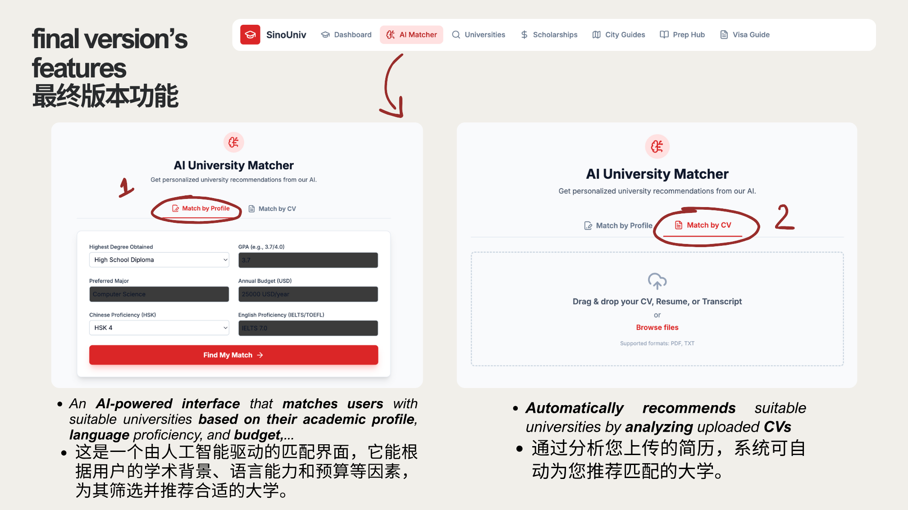

Two projects from my product and design work. These are public write-ups; the source code is not published here.
Sino Univ
Six-person team · Team lead

The task
Finding a university abroad means comparing options against your own situation. I wanted to bring that matching process into one place for international students looking at China.
What I did
I brought the idea, led a six-person team, defined the product requirements, and worked on both the frontend and backend. The product centered on matching students with universities.
What came out of it
We won Best Design in our Tsinghua course in December 2025. The image above is from an earlier prototype, when the project used a different name. The final name is Sino Univ.
I explored how existing cameras could help identify vacant parking spaces in Shenzhen. The product question was how to turn visual observations into parking information people could use.
What I did
I worked on the specifications, the system architecture, and the pitch. The proposed flow was camera input, vacancy detection, and useful parking availability information.
Where it reached
This was product and system-design work. I’m sharing the concept and my contribution, without claiming a city deployment or a production detection model.